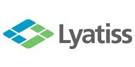

Lyatiss a été une des premières sociétés française dévoloppant des solutions pour les infrastructures cloud et une des seuls au monde à proposer un moteur d'orchestrations de réseaux virtuels pour le cloud.  Elle a co-fondé et dirigé 3 start-up, a été directrice de l'enginering chez un équipementier réseau aux USA et directrice de recherche à l'Inria. Elle a aussi déposé plusieurs brevets dans le domaine de la gestion des infrastructures réseaux et de systèmes distribués.
Parallèlement, elle milite pour la place des femmes en sciences. Elle a notamment participé à une table ronde de la cité des sciences en octobre 2025 sur les femmes et le numérique.
Distinctions :
- 2009 : Concours national d'aide à la création d'entreprise de technologie innovante
(avec des collegue du LIP) - 2011 : Prix Irène-Joliot-Curie dans la catégorie parcours femme entreprise.
- 2013 : Prix de l'innovation Inria – Académie des sciences